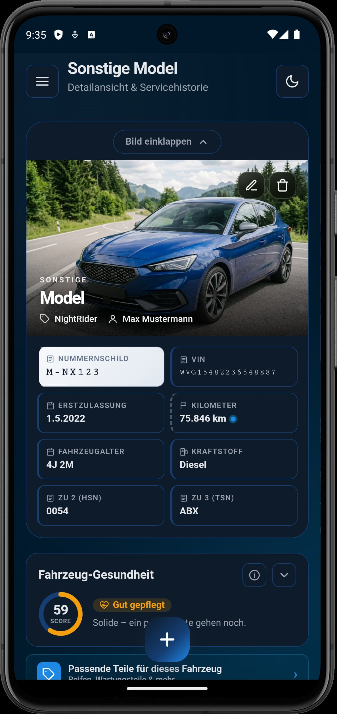
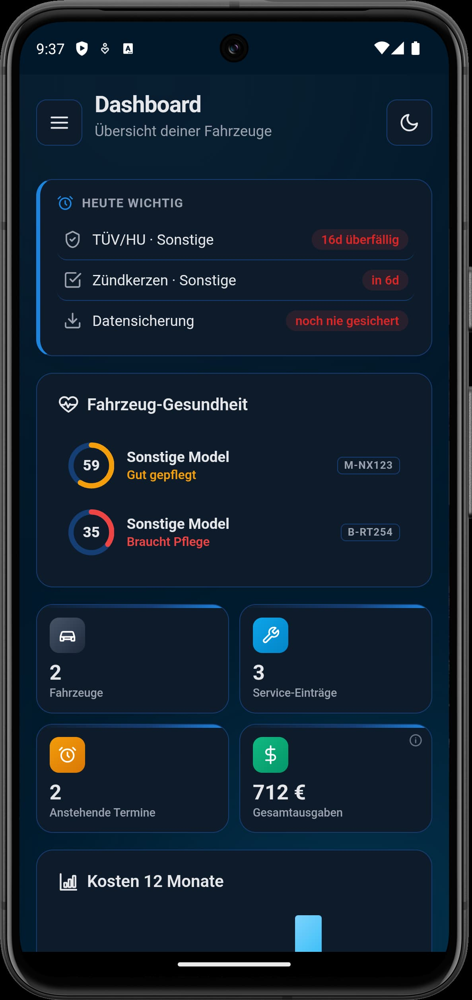
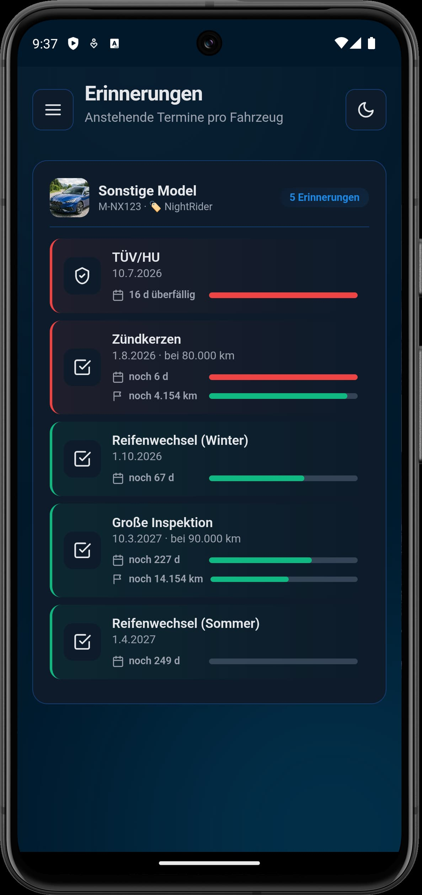
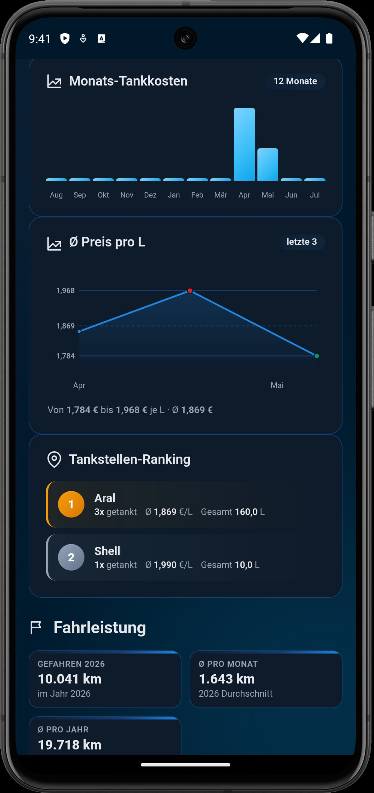
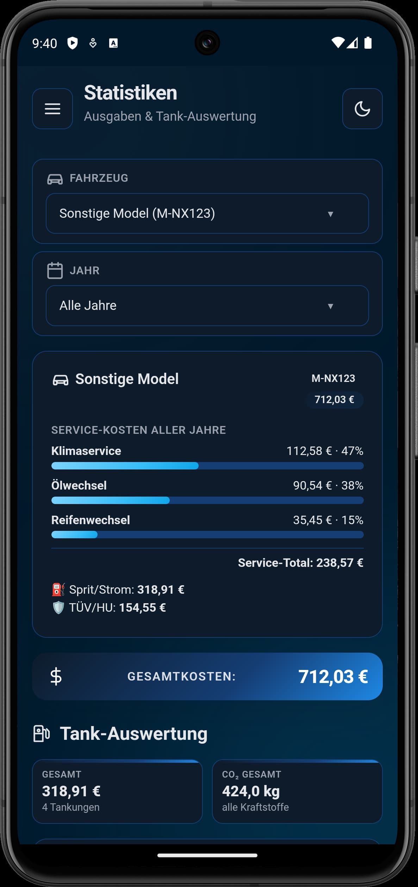
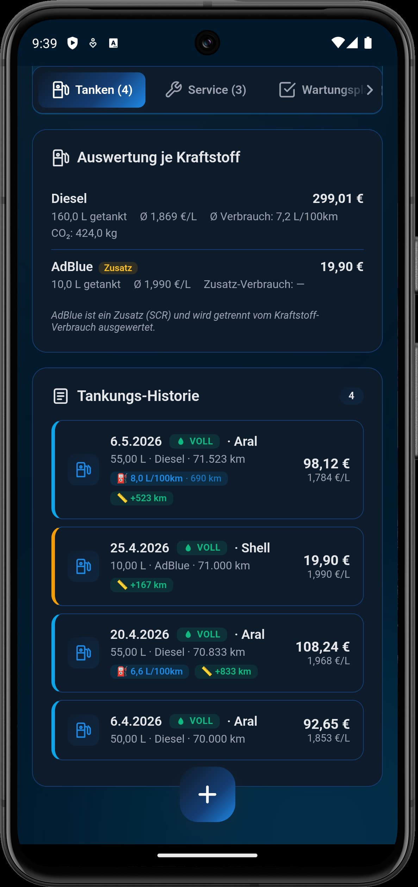

Wartung, TÜV, Tankkosten und Belege – alles in einer App. 100 % offline. 100 % privat. Made in Germany.
Später wird myAutoBuch optionale Premium-Features bekommen. Als Early Adopter bekommst du nahezu alle Premium-Funktionen dauerhaft kostenlos – als Dankeschön fürs frühe Vertrauen.
Nur wenige Plätze verfügbar
Verwalte beliebig viele Autos in einer App – vom Alltagsflitzer bis zum Oldtimer.
Verpasse nie wieder eine Hauptuntersuchung. Automatische Erinnerungen inklusive.
Ölwechsel, Bremsen, Zahnriemen – alle Wartungen übersichtlich geplant.
Verbrauch, Wartungskosten, Fahrleistung – alle Auswertungen deiner Fahrzeuge auf einen Blick.
Rechnungen und Belege direkt am Fahrzeug hinterlegen. Nie wieder Papierchaos.
Serviceheft als PDF exportieren – perfekt für Werkstatt oder Verkauf.
SF-Klasse, Beiträge und Vertragsdaten immer griffbereit.
Alle Daten bleiben auf deinem Handy. Keine Cloud, kein Tracking.
Echte Screenshots direkt aus myAutoBuch.






Der Download bleibt immer kostenlos. Später wird es zusätzliche Premium-Features geben – Early Adopter bekommen nahezu alle davon dauerhaft kostenlos.
Alle Daten bleiben lokal auf deinem Smartphone. Es gibt keinen Server und kein Konto. Später kommt eine optionale Cloud-Sicherung als Premium-Feature.
Aktuell nur Autos (PKW). Motorräder, Wohnmobile und LKW folgen in späteren Versionen.
Deutschland – mit HSN/TSN-Erfassung, TÜV/HU-Terminen und SF-Klassen für die Kfz-Versicherung.
Beliebig viele. Ob ein Auto oder zehn – die App skaliert mit dir.
Aktuell nein. myAutoBuch ist nur für Android verfügbar. Eine iOS-Version ist derzeit nicht geplant.
Der Release wird gerade vorbereitet. Melde dich als Early Adopter an, um früh dabei zu sein.
Fragen, Feedback oder Fehler gefunden? Schreib uns!